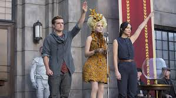
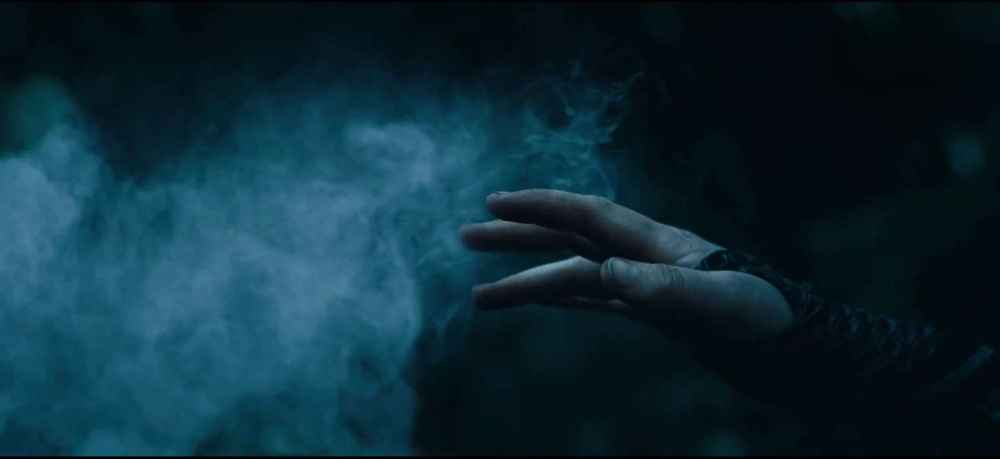

Catching Fire
The Quarterquell
The 75th Hunger Games comes around, but with a catch. The past victors from past games will be put into the selection to play one more time. For district 12 this means Katniss will have to play again since she's the only female winner from district 12. For the male's both Peeta and Haymitch are in the selection, but Haymitch is choosen. However, Peeta volunteers to go in and protect Katniss at all cost. These games are different because Katniss left a print from the last games where she shows hope for rebellion. President Snow wants that hope to be taken away from the districts, so he wants to end her. Plutarch advises President Snow to make the 75th hunger games different. Where the past victors go and play one more time. This way the past victors with expereience go on and kill Katniss instead of President Snow getting his hands dirty. However, Katniss once again impresses the other tributes with her bow and arrow skills, and want her to partner up with her in the games.
The Love Triangle
In this movie we get to see the love triangle that is between Katniss with Peeta and Gale. She cares for both guys, but can't decide which one to stay. Katniss has known Gale since they were kids and shes always had a crush on him. She even offered him to run away with her somewhere far away together with each other's family, but he declines. In the last game Katniss had to play her role as love interest with Peeta and has to continue for President Snow. Although she has to act in love, at some point she actually starts to have feelings for Peeta. She cares for him and tries to protect him at all cost even if it means she has to die.
The Arena
Every year the arena is different for every game just because the Capitol doesn't want to see the same place over again, and for the tributes to have no advatanges they could do or use with the same arena. This year the arena looks like a clock-like structure. It is divided into 12 sections for each hour. Every hour has different danger appearing in each section at a specific intervals, like a clock ticking. Some examples of the deadly hazards are poisonous fog, lightning storms, or deadly creatures.